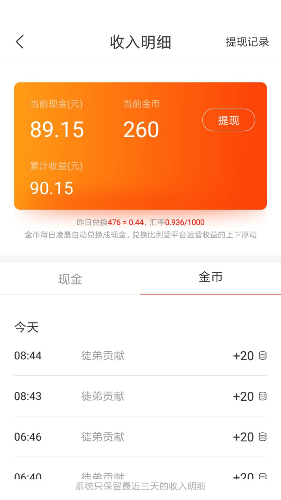
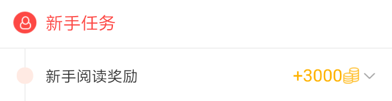
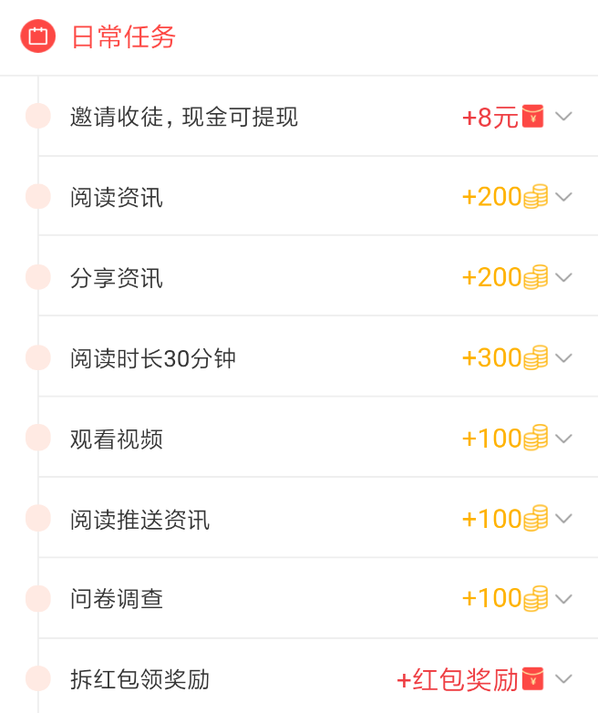

轻轻松松日赚100元，看点头条赚钱秘籍大公开
为了让更多的小伙伴尽快使用看点头条赚到钱，小编呕心沥血整理了一份独家赚钱秘籍，手把手教您轻轻松松日赚100元。炎炎夏日，看点头条给你降温了！

前几天小编做用户调研的时候，了解到有很多用户每天能收到30-40名收徒，每天轻轻松松收入100~200元，小编很好奇他们是怎么做到收徒能力这么强的？小编就随机抽取了一个用户，加了对方好友，慢慢沟通得知，原来对方运用了社群的模式，不断的在加群，加人，收徒。一个月不到的时间，我看他的收益已经3000多元了。我问他这一个月能赚到多少钱？他开心的说轻松到5000块吧！经过沟通发现他原来在一个工厂上班，每个月工资大概三千多块钱；此时此时，小编心里感觉我们做看点头条是值得的、有价值的，可以让用户真的赚钱了。他跟我讲他师父就是一个靠看点头条月收入过万的宝妈。无外乎就是对看点头条的深入了解，和自己的独有赚钱收徒方法。
为此，小编专门沟通了很多收入较高的用户，总结了很多收徒赚钱的方法，最后发现每个人都是可以做的，并且人人都可以日赚100元。接下来小编就详细说说我们可以通过哪些方式收徒赚钱：
一、邀请亲朋好友收徒
1.问下对方是否有看新闻的兴趣或习惯。若对方有兴趣，向好友介绍看点头条的功能和好处。
2.告诉对方看点头条是正规高新技术企业出品的正规手机应用软件。
3.告诉对方去应用宝、360等应用市场下载看点头条，然后注册，让对方填写你的邀请码，填写以后他就成为你的徒弟了，你们双方都有钱拿。
二、微信群，QQ群收徒
1.改微信，QQ名字，改成（在看点阅读文章躺着就赚钱）之类的，去加更多的群闲聊，主动加群里的好友沟通或等待别人主动问你。
2.广撒网，申请3-5个QQ,加各种QQ群。可以通QQ群搜索功能，搜索一下关键字的QQ群，申请入群：“兼职”、“赚钱”、“手机赚钱”、“求职”等等
3.可以百度（微信群），会发现很多微信群二维码发布平台，这时你进去选择微信群种类（微信红包群，微信福利群，微信赚钱群，微信兼职群，微信手赚群），就可以开始扫描二维码加群了。
三、应用市场刷评论收徒
1.在应用市场看点头条APP下面刷评论：（每次更新都可以）提交评论
2.选择资讯类的应用APP下方刷评论：如今日头条，趣头条，搜狐资讯
3.选择各种热门类的应用App下面刷评论：如游戏类的
四、去面对面推广收徒
1.寻找目标人群聚集的场所，找到感兴趣的人来进行推广玩看点头条
2.引导下载注册使用，告诉对方如何下载，如果对方没有流量或者流量不够，可以让他用你的热点，帮助他们下载安装注册，并且告诉他们每天怎么样签到、读新闻、看视频、分享、开宝箱、读推送，赚取更多的金币
除了收徒赚钱外，每天做做日常任务也能轻松赚到钱：
一、每日签到：
每天打开看点头条签到就能领金币，每天都来签个到，连续签到能多拿金币哦。金币能提现，多多益善！
二、新手任务：
首次登录日起20天内，每天来看点头条读新闻，最多可拿1000金币！
三、日常任务
每天来看点头条读新闻、看视频、分享资讯、阅读推送等都能领金币！
好了，说了这么多小编先帮你到这儿了，接下来就是见证你赚钱的时候了！